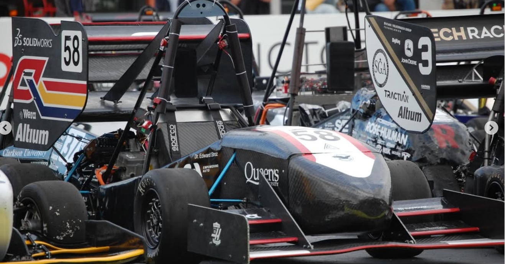
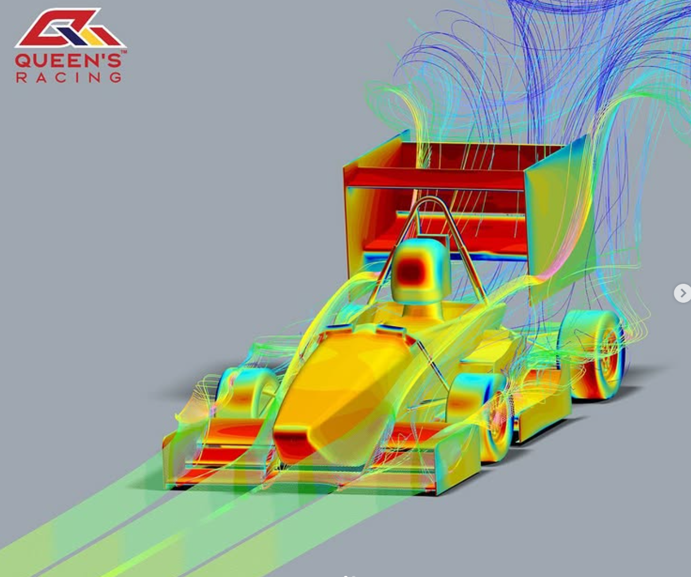
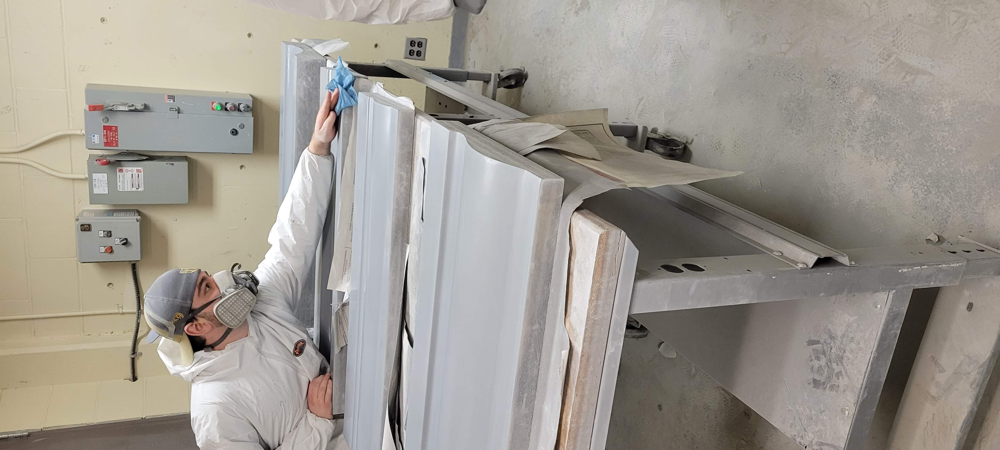

Formula SAE Car
Aerodynamics Subteam Member
The goal was to design carbon-fiber aerodynamic components which would increase downforce with minimal drag while improving performance and handling. To achieve these desired outcomes, I focused on designing and optimizing the front and rear wings of the car using CATIA. I then helped to bring the designs to life by working with the team to manufacture carbon-fibre molds and perform carbon fiber layups, gaining experience with aerostructures and composite materials.
- Designed front and rear wings in CATIA.
- Manufactured carbon-fibre molds, gaining experience with aerostructures and composite materials.
- Improved vehicle performance and handling through aerodynamic development.

